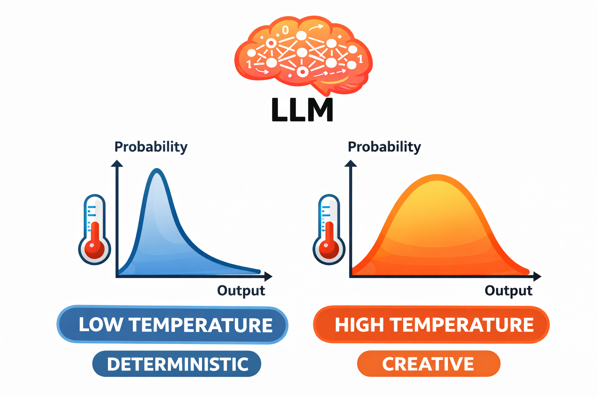
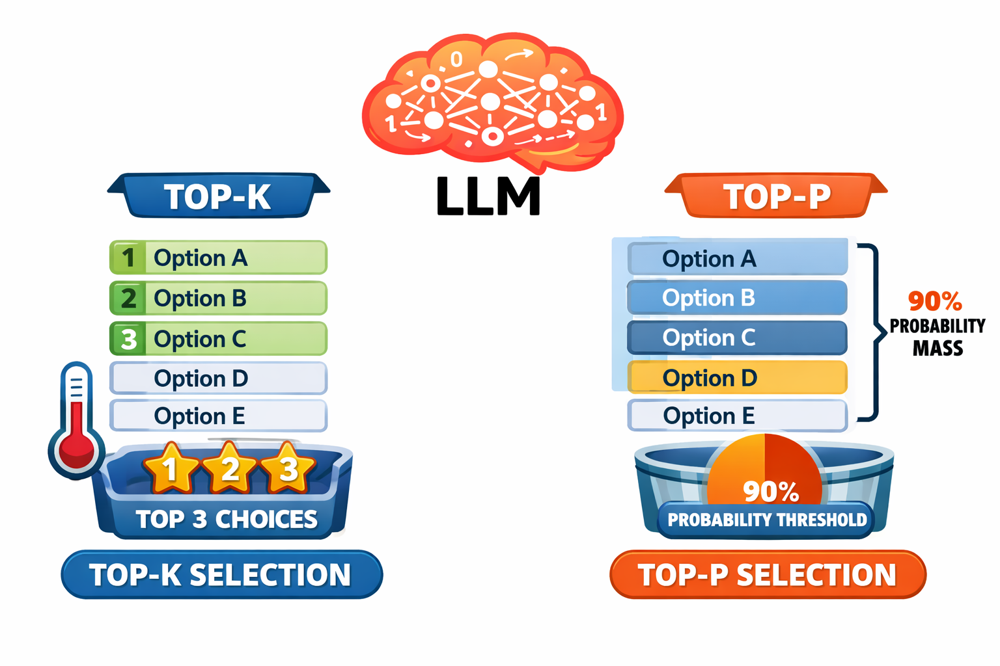

class: center, middle, inverse count: false # Controlling Generation --- # What Parameters Control Generation? In Lecture 3.1, we covered the structure of an API call — what goes in, what comes out. But we glossed over the parameters that control **how** the model generates its response. -- These aren't obscure settings. They directly affect whether your agent is: - **reliable** or erratic - **concise** or verbose - **creative** or deterministic ??? [1-2 min] Frame this as practical. Students will see how to apply these settings immediately. --- # Temperature Controls Randomness .split-left[ From Lecture 2.1: the model produces a **probability distribution** over possible next tokens. Temperature controls how that distribution is used. **Temperature = 0.0** (deterministic) The model always picks the most probable token. Same input → same output every time. **Temperature = 1.0** (creative) The model samples across the full distribution. Less likely tokens have a real chance. Different every time. ] .split-right[ <p></p> ] <div class="clear"></div> ??? [2 min] Connect back to the probability distribution concept. Temperature is the control knob on that distribution. --- # What This Looks Like in Practice **Prompt:** "Name a color." -- **Temperature 0:** "Blue." Every time. -- **Temperature 0.3:** "Blue." Usually. Occasionally "Red" or "Green." -- **Temperature 1.0:** "Blue." Sometimes. But also "Cerulean," "Mauve," "Burnt sienna." Different every time. -- The underlying knowledge doesn't change. What changes is how much the model **explores beyond the most obvious answer.** ??? [2 min] The color example makes temperature tangible. Students should be able to picture what each setting does. But don't just talk about it — let's see it. --- # Live Demo: Temperature in Action .small-code[ ```python PROMPT = "Name a color." TEMPERATURES = [0.0, 0.3, 1.0] RUNS_PER_TEMP = 5 for temp in TEMPERATURES: print(f"--- Temperature {temp} ---") responses = [] for i in range(RUNS_PER_TEMP): * response = client.messages.create( * model="claude-haiku-4-5-20251001", * max_tokens=50, temperature=temp, messages=[{"role": "user", "content": PROMPT}] ) text = response.content[0].text.strip() responses.append(text) print(f" Run {i+1}: {text}") unique = len(set(responses)) print(f" → {unique} unique out of {RUNS_PER_TEMP}") ``` ] .callout[**Watch the output.** Temperature 0 = identical every time. Temperature 1.0 = different every time. This is why agents use low temperature.] ??? Run temperature_demo.py. Let the output speak for itself. Count unique responses together. Point out we're using Haiku here — faster and cheaper for experiments. The temperature parameter works the same across all models. --- # Temperature for Agents For most agent tasks, you want **low temperature** — typically 0 to 0.3. -- **Why?** Because agents need to be *reliable*. When your agent reads a file and decides which tool to call next, you want it to make the same decision every time given the same context. -- > Randomness in agent decision-making is a bug, not a feature. -- Higher temperature is useful for: - Brainstorming or generating creative options - Producing varied examples - Tasks where diversity matters more than consistency .callout[**Default for agents: temperature 0 to 0.3.** You want reliability, not creativity, in the decision-making loop.] ??? [2 min] The blockquote is the key insight. Students should internalize: low temperature for agent reasoning, higher only for intentional variation. --- # Sampling: Top-k and Top-p Temperature controls how **random** the selection is. Top-k and top-p control **which tokens are even considered.** .split-left[ **Top-k:** Only consider the **k most probable** tokens. Fixed menu size. **Top-p (nucleus):** Consider the smallest set of tokens whose combined probability exceeds **p**. Adaptive — narrows when the model is confident, widens when uncertain. | Parameter | Agent Default | |---|---| | **Temperature** | 0 to 0.3 | | **Top-p** | 0.9 or default | | **Top-k** | Leave at default | ] .split-right[ <p></p> .info[Temperature is the big lever. Top-k and top-p are refinements that matter more for creative applications than agents.] ] <div class="clear"></div> ??? [2 min] Don't spend long here. Students need to know these exist and what they do, but temperature is the 90% lever. Default values are fine for agent work. --- # Max Tokens `max_tokens` sets the maximum number of tokens the model can generate in a single response. -- .split-left[ ### Set it too low Response gets cut off mid-sentence. `stop_reason` = `max_tokens`. For agents, this can mean a **tool call gets truncated** and becomes unparseable. ] .split-right[ ### Set it too high Reserving output capacity you don't need. Higher potential costs. Less room for input tokens on models with combined limits. ] <div class="clear"></div> -- .callout[**Reasonable default for agents: 4096 tokens.** Increase for long outputs (code, reports). Decrease to enforce brevity.] ??? [2 min] The truncated tool call scenario is worth emphasizing — it's a real bug students will encounter. --- # Putting It All Together A well-configured agent API call: ```python response = client.messages.create( * model="claude-sonnet-4-6", * max_tokens=4096, * temperature=0, system=system_prompt, messages=conversation_history ) ``` Low temperature for reliability. Reasonable max_tokens. System prompt and conversation history providing context. -- **That's it.** These are the settings you'll use for most agents in this course. .callout[Don't get lost in parameter tuning. **Low temperature, reasonable max_tokens, good context.** The context matters far more than the parameters.] ??? [2 min] The highlighted lines show what's new in this lecture. The closing callout is critical: context engineering > parameter tuning. --- # Key Takeaways -- **1. Temperature is the big lever** Low (0-0.3) for agent reliability. Higher only when you intentionally want variation. -- **2. Sampling parameters are secondary** Top-p and top-k refine token selection. Default values are fine for most agent work. -- **3. Context matters more than parameters** Getting the context right is the 10x improvement. Parameters are the 1.1x improvement. ??? Three clean takeaways. The third point sets up the next lecture on in-context learning and context engineering. --- # Coming Up Next **Lecture 3.4: In-Context Learning and the Limits of Prompting** How in-context learning works and why it's fundamental to effective prompt design. ??? Brief transition to the next lecture.